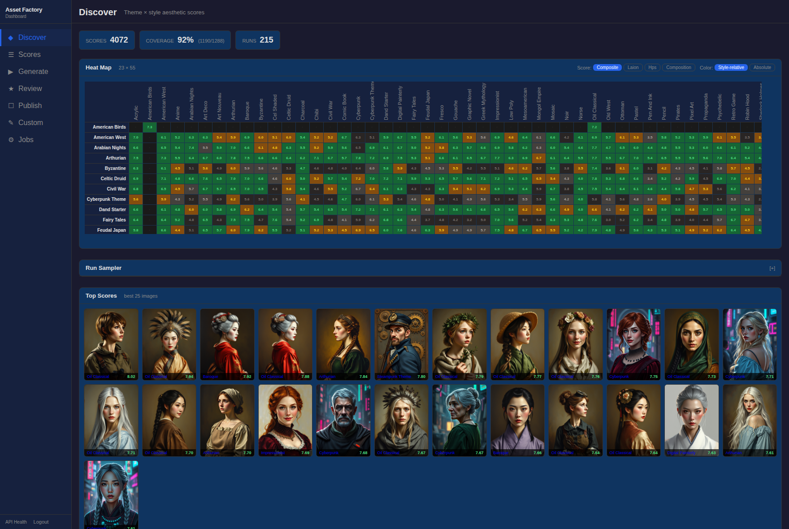
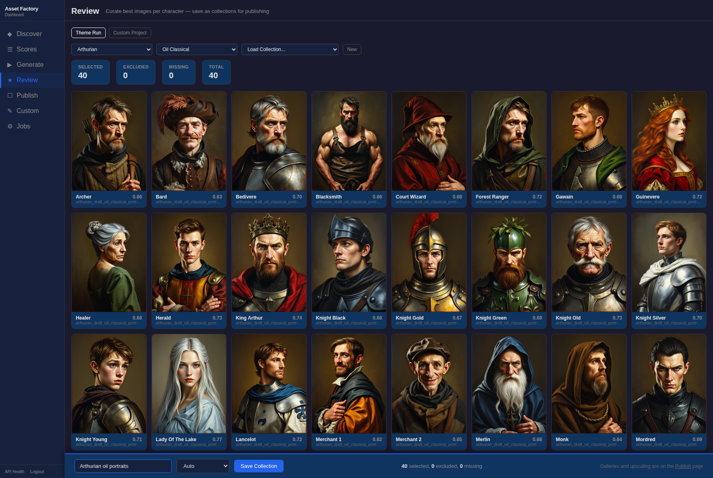
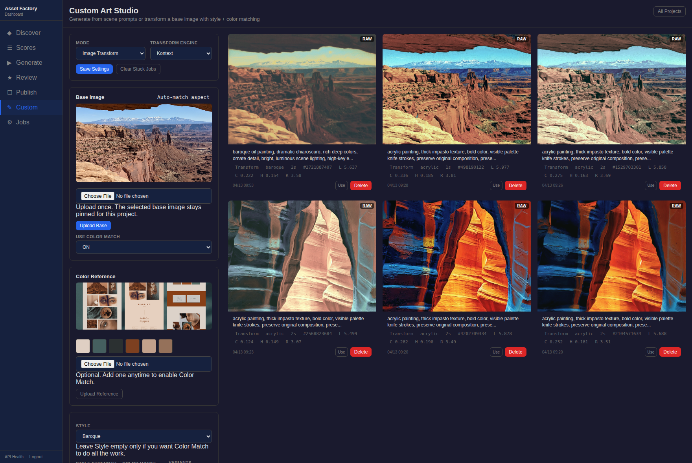
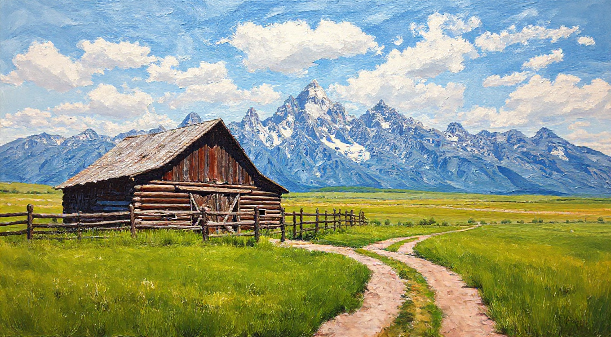

Asset Factory is a local-first multimodal production platform I built to turn generative models into repeatable digital-product workflows. It coordinates image and audio generation, persistent GPU model serving, automated quality scoring, evolutionary optimization, human curation, packaging, metadata generation, and marketplace publishing.
Asset Factory is the system; Assets Forge is one brand and output channel it powers. The interesting engineering problem is not generating a picture. It is everything required to turn model inference into controlled, reviewable, publishable output.
Scope figures above are from the project's mid-April 2026 documentation snapshot.
Operator Workflow
The dashboard exposes the production loop as distinct operating stages: Discover, Scores, Generate, Review, Publish, and Custom. The UI is FastAPI with HTMX and Jinja2 over PostgreSQL-backed production state; pipeline actions route through the API and job-worker layers.

From Model Inference to Production
The core LangGraph workflow generates portraits, maps, and audio; checks output; retries failed assets; packages accepted work; and produces listing copy. Checkpoints allow crash-safe resume and selective reruns. A separate persistent model server keeps FLUX warm so production runs do not pay repeated model load costs.
The runtime is built around a GPU-constrained machine rather than pretending model capacity is unlimited. A shared memory manager coordinates FLUX, MusicGen, CLIP/CLAP, vision models, and local LLM inference to avoid out-of-memory collisions.
Evaluation Rather Than Generate-and-Pray
Every candidate can be scored with multiple independent signals. The current scoring path combines a LAION aesthetic model, HPSv2.1 human-preference scoring, and rsinema composition/color/lighting attributes into a normalized composite score. Prompt alignment and vision review provide additional gates, and failed assets can be regenerated with feedback.
The same engineering instinct appears elsewhere in this portfolio: generation or search is not proof. Strategy Assayer separates candidate search from evaluation; Asset Factory separates image generation from scoring, curation, and publication.

Custom Art Studio
Asset Factory later expanded beyond themed asset packs into a Custom Art Studio for interior-decorator workflows. A user can supply a scene prompt and reference image, generate or transform artwork, apply palette matching with Reinhard LAB color transfer, pin seeds for iteration, and preserve project history. Image transforms can route through FLUX Kontext or img2img depending on the project.
Custom Studio deliberately bypasses the full LangGraph pipeline for lower-latency interactive work, while still reusing the same model-serving, scoring, review, and publishing infrastructure.

Production Architecture
| Model server | Persistent FastAPI service keeps FLUX warm and exposes generation, IP Adapter, img2img, Kontext, batch, and depth-map endpoints. |
|---|---|
| Pipeline | LangGraph workflow with checkpoints, conditional retry, packaging, and listing generation. |
| Evaluation | CLIP/CLAP alignment, LAION aesthetic scoring, HPSv2.1, rsinema attributes, composite ranking, and vision review. |
| Operator UI | FastAPI + HTMX + Jinja2 dashboard for discovery, scoring, generation, review, publishing, optimization, and custom projects. |
| Persistence | PostgreSQL + SQLAlchemy/Alembic for jobs, runs, scores, collections, projects, and publishing state. |
| Execution | Priority job worker, cancellation controls, resumable runs, and GPU-aware resource coordination. |
| Publishing | Packaging, upscaling, LLM/vision-grounded metadata, and workflows for Fine Art America/Pixels, itch.io, and The Game Crafter. |
Generated Output
The gallery below is meant to show controlled range rather than serve as an art portfolio: different content types, materially different styles, and examples where the production system is doing more than a single text-to-image call.

Productization
Accepted images go out as products: Assets Forge packs and card decks, Fine Art America and Pixels prints, upscaled files, generated metadata, collections, and packaging built for each marketplace.
The repository remains private because it contains the production implementation, integration details, and operating knowledge. This case study describes the architecture and visible output without publishing that implementation.
Assets Forge is one public-facing product brand powered by Asset Factory.
Generated output stats available on request.